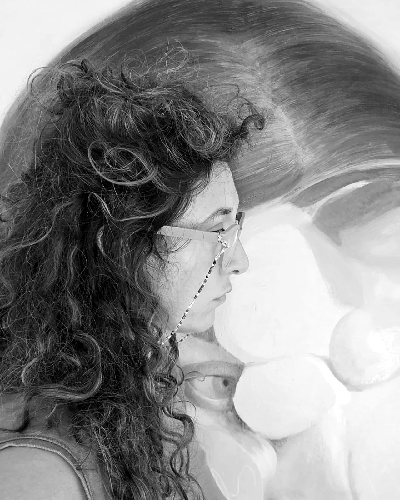
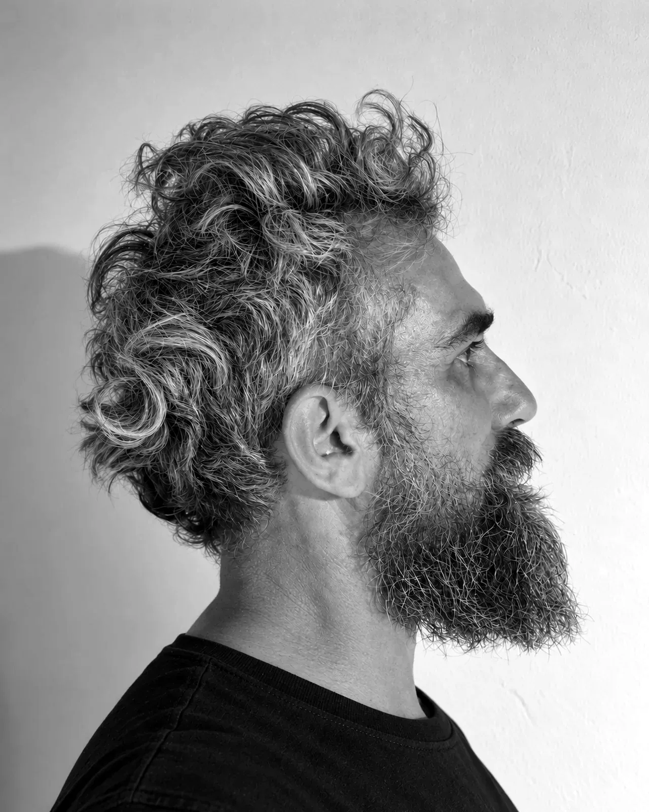
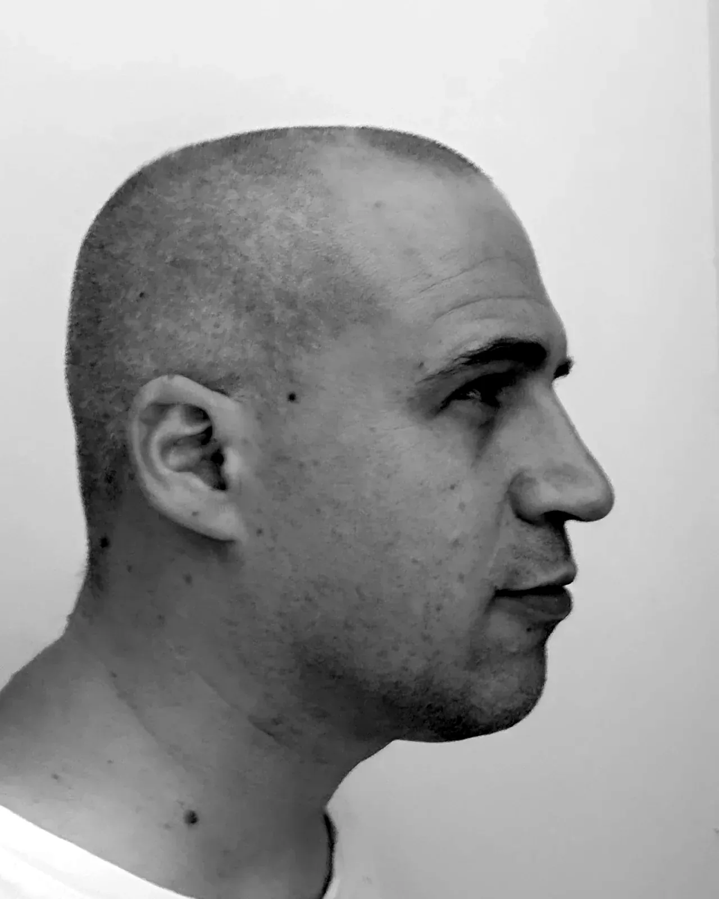

PRO-FILI Festival
The other artists

Mattia Signorini
Writing
Novelist, translated across half the world.

Giorgia Roversi
Painting
Painting the invisible anatomy of emotions.

Zentequerente
Visual arts
Drawing and gathered signs: the invisible within the visible.

Marcello Ubertone
Songwriting
Songs that tell stories, between imagination and real life.